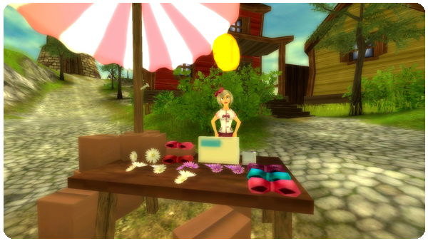

Hejsan allihopa!
Denna vecka öppnar en dekorationsförsäljare sitt stånd på torget mitt i Västkobbens fiskeby!

I övrigt har vi under gångna veckan arbetat intensivt med att fixa en rad buggar som slank igenom vid öppnandet av Gyllenåsarnas dal. Flera buggar hittades och rapporterades av några av alla våra duktiga och trevliga spelare. Stort tack för det!
Bland annat orsakade en bugg möjligheten att repetera ett uppdrag flera gånger, vilket resulterat i att några spelare fått för mycket XP. Detta ska nu vara korrigerat för ”drabbade” spelare.
Vi förbereder just nu nytt spännande innehåll till spelet som löpande kommer släppas i våra veckoupdateringar!
Vänliga hälsningar: